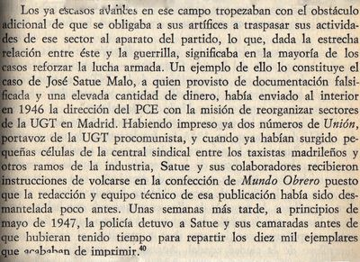

"UN CAMARADA FORMIDABLE, EL MEJOR GUÍA DE PASOS DEL PCE"
Francisco Pradal: apuntes biográficos
Salvador F. Cava
Uno de los momentos más gratificantes de la aventura editorial de mi libro Los guerrilleros de Levante y Aragón fue, sin duda, la presentación que del mismo se realizase en el Congreso de los Diputados, en un mano a mano histórico entre Santiago Carrillo y el José Manuel Montorio, exguerrillero del AGLA. Un tiempo antes, preparando dicho acto, fui recibido en casa del histórico dirigente comunista. Mi libro, que se lo había hecho llegar por correo, lo tenía subrayado a rotulador. Cosas de la edad y de la vista. Resultó un encuentro más que agradable. Y lo traigo ahora a colación y como primer párrafo de este nuevo artículo para Entremontes, por una de las preguntas que me hiciese, y a las que no pude responderle, pero que ahora bien podría desarrollar un poco más detalladamente. Y a ello se refiere todo lo que sigue. El interés de Santiago Carrillo no fue otro, en este aspecto, que el de saber qué había sido de Pradal.

Mis referencias sobre Pradal, recogidas en el citado volumen, apenas si se ceñían a dos momentos narrativos. Uno de ellos se halla recogido como cita bibliográfica: los datos aportados por el hombre de confianza de Santiago Carrillo, José Gros, en sus memorias: Abriendo camino (1971). El segundo son los testimonios que obran en el Archivo Histórico del PCE, donde con toda seguridad se podría indagar aún mucho más, y que en mi caso me llevaron a fechar la llegada a Valencia desde Francia del natural de Buñol, Peregrín Pérez, en 1947 acompañado precisamente por Pradal. Peregrín Pérez fallecería en un encuentro con la guardia civil en La Ginebrosa (8/8/48) en el momento que ocupaba la jefatura del Estado Mayor de los guerrilleros levantinos.
Los recuerdos de José Gros, quien tras su etapa en la URSS, hacia 1946, está de regreso en Francia con otros destacados militantes del PCE, son básicos para conocer el funcionamiento del servicio de pasos por los Pirineos. Pradal es su maestro. Y Gros su mejor panegirista. Así lo reconoce el propio militante catalán, quien aprenderá rápido y bien, y al poco se ocupará de las misiones encargadas al propio Pradal, que no son otras que las de mantener el contacto entre Toulouse y Barcelona, pasando el melillense a responsabilizarse de los desplazamientos entre la ciudad francesa y Madrid. La experiencia guerrillera de Gros en la URSS, su militancia sin fisuras en el PCE y los nuevos conocimientos sobre la frontera entre España y Francia le llevarán a tener un papel más que activo, decisivo diría yo, en el futuro inmediato de la acción guerrillera antifranquista en Levante. En concreto durante los años 1949 a 1952. De Pradal, que también se le apoda "El Maromo" en algunos textos, destaca que aunque carente de educación, era muy estudioso y sobre todo fuerte. Cargaba con el peso que hiciese falta aunque no hubiese comida y después, cuando la había, se daba un atracón.
En octubre de 1946 José Gros atraviesa con Pradal la frontera francesa. El natural de Melilla, según Gros, lo viene haciendo regularmente desde 1943. Aunque el propio Pradal en sus declaraciones a la policía, cuando en 1947 sea detenido, sólo reconocerá tres expediciones. Este viaje, iniciático para Gros, que le servirá para memorizar el trayecto y luego utilizarlo él en otras nuevas misiones, arranca con las palabras: " Para este primer viaje a España se me asignó un camarada formidable: Pradal. Como guía de montaña sabía un rato y, además de guía era enlace del Partido con el interior. El camarada Pradal tenía una misión distinta de la mía, aunque también en Barcelona. Él tenía contacto con la organización del PSUC. Antes de salir ya conocía yo, por haberme informado en el Partido, las cualidades y defectos de Pradal. Se me encargó procurara hacerlo comprender que, durante el día, no se debía cometer ninguna imprudencia. Yo era un aprendiz en estas cuestiones. Él era un veterano con gran experiencia. Pasaba a gente por los Pirineos desde 1943 en plena ocupación alemana de Francia. A pesar de todo, a veces olvidaba reglas de elemental prudencia ".
En cuatro etapas, caminando tan sólo de noche, llegarán hasta Manlleu, donde tienen establecida la base. Aquí se asean, cambian de ropa, esconden las metralletas y los macutos, recaban información en un punto de apoyo, comen y toman el tren que les conduce a Barcelona.
El punto de partida se ubica en Perpiñán donde "Ramón" (posiblemente Ramón Escrivá) y "Espejo", que había estado en Rusia, se ocupan del equipo de pasos de ese sector, coordinado por Fernando Claudín. Desde Perpiñán se dirigen hacia Prats de Mollot, a una casa de montaña, e importante punto de apoyo, a cargo de El Tanque, apodo habitual en estos años, al menos utilizado también con referencia a Atanasio Serrano "Capitán", muerto en Cañizares (2/11/49), y a otro guerrillero fallecido en Baldellou (Huesca) el 9 de enero de 1948. El paso de la frontera se realiza por Molló. En realidad Espinavell es la primera aldea de España que contemplan. Continúan hasta Camprodón y la ermita de san Antonio dejando a un lado un destacamento de soldados y un campo de tiro. Se les hace de día y como tenían previsto duermen, descansan, fuman y comen. La segunda jornada hasta una fuente es toda de subida y bajada, por montañas, matas de pinos, carboneras, casas aisladas. Da pie para describir la fortaleza de Pradal, su conocimiento del terreno y hasta sus precauciones. " Se sabe toda la montaña" recalcará Gros, añadiendo, como ejemplo, que " llegamos a la cresta de una montaña y pensé que desde allí la vista debía de ser formidable. Pradal me dijo que debíamos escondernos para descansar. También él debía estar fatigado. Cargaba más peso que yo en su macuto. No decía nada. Pradal era un camarada formidable. ¡Y qué fuerza tenía! Al lado de unas matas de juncos, ya en la parte baja, me dijo que pronto llegaríamos a la fuente. Todavía tuvimos que pasar una plazoleta de una carbonera y, al llegar a unas rocas, Pradal se quitó el macuto y se fue a inspeccionar el lugar, en el que durante el viaje anterior había dejado una señal para saber si había pasado alguien ".
La tercera etapa les lleva desde la fuente hasta la ermita de san Miguel, y pensamos que este sería el mismo trayecto seguido para la entrada con Peregrín. Atraviesan el río Vianya, continúan y también cruzan, siempre con suma precaución, la carretera de Caña a Camprodón dirigiéndose a san Pedro Despuig, evitan san Andrés, ven las luces Olot, pasan la carretera de Olot a san Juan de las Abadesas, más tarde otra que se encamina a Ridaura, llegan a las proximidades de Mallol, a Junetas y por fin a la ermita de san Miguel, el fin de esta tercera jornada. La cuarta etapa les lleva a " subir montes, a cruzar campos y barrancos…" por cerca de Falgas de Bas, ermita de Cabrera, santa María de Corcó y Lourdes de Torelló en cuyas proximidades deberían tener la base con los medios necesarios para cambiar de aspecto y prepararse para tomar el tren en Manlleu, transporte que les conduciría a Barcelona, lugar de su misión, y núcleo imprescindible para desde aquí encaminarse a Madrid si la finalidad así fuese. Asimismo contaban con un punto de apoyo en una casa cerca Manlleu próxima a la carrera que lleva a Ripoll. Aquí será donde les faciliten información y sobre todo comida: " La mujer nos invitó a cenar y los dos aceptamos con mucho gusto. Mientras ella nos preparaba la cena, el marido llevó los dos críos a la cama. La mujer empezó a freír patatas en una sartén muy grande. Yo la miraba. Luego puso dos platos sobre la mesa, pan y vino. Yo le dije que había preparado muchas patatas y ella contestó:
- Su amigo no dirá lo mismo.
- En efecto, Pradal se comió una buena ración con cuatro huevos fritos, además."
El viaje de regreso, utilizando idéntica ruta, y tras que en Barcelona los planes, al menos los de Gros, no se materialicen por las detenciones que la policía está practicando tras que estallasen unas bombas en La Vanguardia y en unas pastelerías, servirá para sacar de España a la militante del PSUC "Margarita" (seguramente Adelaida Barca). Paro básicamente para que Pradal le termine de enseñar a Gros todos los pormenores del itinerario y además complete su parecer de las dotes necesarias para ese más que duro recorrido: " Hasta las tres de la tarde no nos despertamos. Era un lugar seguro, al cual nadie se podía aproximar sin hacer ruido, lo que nos permitía dormir sin mantener vigilancia. Comimos muy bien todos, incluso Margarita. Hacia las cuatro, Pradal, que no perdía el norte, empezó la preparación sicológica para la próxima etapa. Propuso salir aquella tarde, en pleno día, ya que podíamos atravesar sin grandes dificultades la montaña por caminos de cabra. Cuando llegamos al lugar más peligroso, Pradal dio la mano a Margarita y la hizo pasar con toda seguridad. Nos detuvimos y eché mi primer cigarrillo del día ."
A principios de febrero de 1947 Pradal y Gros realizarían un nuevo viaje a Barcelona portando cada uno 30 kilos de papel y propaganda en sus mochilas. En esta ocasión son dos expediciones las que salen al mismo tiempo desde Perpiñán y Prats de Mollot, aunque con diferente recorrido. El punto de encuentro es el mismo de Manlleu. El de Gros utiliza el paso que le ha enseñado Pradal, al tiempo que Pradal lo realiza junto con González y Boada por el paso que conoce este último. Sin embargo, de regreso, una vez ultimada con éxito la misión, Pradal y Gros regresarán juntos por el paso del primero. En el transcurso de retorno no faltarán anécdotas y bromas relacionadas con la comida de Pradal. En la cabaña de El Tanque harán el alto preciso una vez atravesada la línea fronteriza. Pero en esta ocasión ambos serán detenidos por los gendarmes en Prats de Mollot. Sólo Pradal lleva documentación en regla, por lo que puede avisar al Partido y al poco se persona "Ramón" para mediar en su libertad. Desde aquí partirán hacia Toulouse para informar a Santiago Carrillo.
En la segunda quincena de marzo se celebra el III Pleno del Comité Central en la sala de fiestas del ayuntamiento de Montreuil, cerca de París. Hacia el 3 de abril Carrillo envía de nuevo a Gros a Barcelona. Pero ahora Pradal ya no le acompaña. En el mes de marzo ha sido enviado a Madrid, y en el de abril otra vez de nuevo a la capital de España. En esta segunda misión llevando a Peregrín Pérez Galarza. Y aún realizaría un tercer viaje, en el mes de octubre, momento en el que sería detenido, y que en buena medida justifica estas páginas.
El viaje de Peregrín se realizaría en el mes de abril. Peregrín Pérez era uno de los militantes más carismáticos, en su dimensión militar, del PCE. Comandante del XIV Cuerpo Guerrillero de la República y Jefe de la División de españoles en el ejército de la URSS que combatiría a las tropas nazis. En 1946 había regresado, como José Gros, "Eduardo", Sebastián" y otros varios a Francia. Y ahora se le destina a Valencia para hacerse cargo del Partido y de las guerrillas. Con Pradal como guía, y como hermanos, llegan ambos a Madrid con los nombres falsos de Carlos y Luis Guerrero López, siendo ayudados en sus primeras labores por Julia Martínez de la Fuente que se había salvado de las caídas del equipo de Mariano Ortega "Borrás" en Valencia, pero ya no de las de Cecilio Mena en Madrid.
Sabemos del viaje con Pradal por el informe que Luis Delage realiza en el mes de enero. Meses más tarde, tras estar también escondido y sin contactos con nadie para no ser detenido, coincide con Peregrín en Valencia y le busca lugares donde alojarse. En su llegada en el mes de mayo a Valencia, tras su paso por Madrid, Pradal y Peregrín utilizan la estafeta que tienen ambos Regionales en casa de una camarada amiga de Delage, Carmen Benimeli, situada en la portería de su vivienda. Hasta allí llegan Pradal y Peregrín, y será Carmen quien los ponga en contacto con Delage. Luis Delage se hallaba en Valencia desde los primeros días del mes de enero en los que ya se ha puesto al servicio de Mariano Ortega "Borrás", el Secretario General, y de quien presenciará su detención. Carmen Benimeli también había regresado desde Francia, pertenecía a la Unión de Mujeres aunque su familia era más bien de derechas, daba clases de piano y conciertos. Ella sería quien facilitase otra casa como punto de apoyo en la calle Doctor Sunsi (nº 34), donde vivía su hermana y su cuñado. Delage y Peregrín intentarán rehacer la estructura del Partido antes de las llegadas a la ciudad de Luis Delgado, Adolfo García o Valentín Bea, entre otros nuevos dirigentes.
La Causa que se instruye contra Pradal es la nº 143.400, aunque también se le reclama el 14/8/1946 por el 272 C 46. Enrique Eymar Fernández (Coronel de Infantería) será su juez, teniendo como secretario al capitán de caballería Manuel Drake de la Cerda Redondo. Se incoará por actividades de tipo comunista y paso clandestino de la frontera. Desde el 31 de octubre de 1947 hasta el 27 de marzo de 1948 dura la instrucción. Serán detenidos, y trasladados a Ocaña: Francisco Pradal González (17 de octubre), Luis Heras de la Carrera (19 de octubre), y Francisco Almansa López (22 de octubre). El atestado de la policía, nombramiento del secretario, lista de objetos ocupados, declaraciones, conformes y antecedentes, indagatorias, documentación e informe del juez especial son las secciones que completan el documento de la justicia militar.
A 13 horas del 18 de octubre interrogan en comisaría a Pradal, que utiliza documentación falsificada por Domingo Malagón, a nombre de Rafael Ávila Bulpe. El inspector jefe de la Brigada de Información de la Jefatura Superior de Policía de Madrid es Francisco de la Guardia Gilabert, y también se hallan presentes en el interrogatorio oficial el agente Antonio Menéndez Conde y quienes los han detenido: Alejo Plaza Martínez, Conrado Casimiro Arribas y Antonio Ruiz Fernández.
Constan aquí ya, antes del cuestionario y hemos de suponer los "tratos previos y posteriores", los datos físicos de Pardal: 35 años, de 1,72 de estatura, pelo castaño oscuro con calva pronunciada, soltero, pintor, hijo de Basilio y Trinidad, natural de Melilla, con residencia en una pensión en la calle Atocha, número 96. Lo detienen, y sobre esta circunstancia tendremos necesariamente que volver, simplemente porque les infunde sospechas. Ante la solicitud de documentación, él les muestra el carné de excombatiente. Los agentes dudan del sello, les dice que acababa de llegar a Madrid procedente de Barcelona, después de haber pasado clandestinamente la frontera. También lleva una tarjeta de abastecimiento (1/1/45), cédula personal (12/10/42), carné de agente comercial (2/4/45), carta comercial de la casa Pirelli (2/10/47) todos ellos expedidos en Barcelona, y 4.000 pesetas. Como actuación complementaria, y posterior, registrarán su domicilio no encontrando nada más que una maleta con doble fondo vacía, con ropa de uso y útiles de aseo. Maleta que, por cierto, Pradal reclamaría que se la devolviesen desde el penal de Ocaña.
La biografía de Francisco Pradal, recogida en declaraciones e informes, señala que el día 3 de julio de 1936 salió de Melilla para participar en la Olimpiada Popular que se iba a celebrar en Barcelona entre el 19 y el 26 de julio, (recorrido semejante a de otros militantes comunistas como por ejemplo el de Armando Fuster "Luis"), por lo que hemos de suponer unas buenas condiciones atléticas. Estaba afiliado a la JSU desde el 3 de marzo de 1936, siendo nombrado su vicepresidente a los pocos meses. Con esta filiación da mítines, cotiza en el SRI, es interventor del Frente Popular y el 10 de abril de 1936 es nombrado integrante del comité pro fusión de las juventudes socialistas y de las comunistas. " En Melilla, las Juventudes Socialistas, nacidas en mayo de 1931, y las Juventudes Comunistas venían colaborando en el seno de la Alianza Obrera. En el mitin organizado por esta coalición de partidos y sindicatos obreros para el domingo 19 de enero de 1936 participaron Ángel Rosillo por los jóvenes comunistas y Juan Lomeña por los socialistas. El domingo 26 de enero son las juventudes socialistas y comunistas las que organizan un mitin en el cine Goya en el que participan Rafael Montoya y Enrique Pérez por los socialistas y Manuel Rosa Martín y Francisco Pradal por los comunistas. En este mitin se defiende ya abiertamente la unidad de acción de ambos formaciones. El 30 de enero en el cine Alhambra son las juventudes socialistas las que organizan un mitin en el que toman la palabra Joaquín Roldán, José Martín Peña, Rafael Montoya y Manuel Tárrago Ramirez. Ambas formaciones apoyan al Frente Popular de cara a las elecciones de febrero de 1936 aunque dejando claro que sus aspiraciones políticas y sociales van más allá que lo acordado por la coalición de izquierdas ".
El intento de golpe militar le sorprende en Barcelona donde permanece dos o tres días, y por ello no forma parte de los represaliados del día 17 de julio de 1936 " que dejó en la ciudad de Melilla más de trescientos fallecidos y cerca de dos mil represaliados en el cercano campo de Concentración de Zeluán" (fusilados serían en estas fechas muchos de los líderes juveniles: Fortunato Mafoda, Rafael Montoya Odri, José Gallego Urbano, Ricardo Cantón, Manuel Tárrago, José Martín Peña, Manuel Rosa Martín, Manuel Ramírez Valdeiglesias, Pedro Salazar, Manuel Gómez Galindo, Juan Lomeña, Carmen Gómez Galindo, José Gómez Galindo y Enrique Pérez). La policía de los informes franquistas lo sitúa en Melilla entrevistándose con el general Manuel Romerales (fusilado por los nacionales el 28 de agosto de 1936) para pedirle que no celebren el día de las fuerzas armadas. El 12 de marzo 1942 la policía interceptará un documento interno del PCE donde se biografiaba a Pradal. Se añadía en él, además de lo anotado, que militaba en el sindicato de la CNT, del ramo de la construcción, pintores. Que había estado perseguido durante el Bienio Negro siendo tres veces enjuiciado y nueve veces detenido. Y que durante su estancia en Barcelona, con motivo de la Olimpiada había tomado parte activa en el asalto al cuartel de las Atarazanas durante los días 19 y 20 de julio.
Pradal, y siguiendo con sus datos biográficos, desde Barcelona regresa en barco a Málaga. Aquí reside unos dos meses, ingresando en agosto en la 4ª Compañía de Milicias, con sede de reclutamiento en el cuartel de la Trinidad. Su primer destino es Guadix ya con misiones políticas. Con esta Compañía sigue hasta el mes de diciembre de 1936 en el que se le traslada a Madrid e ingresa en la 1ª Brigada Mixta, como cabo, combatiendo en Villaverde y participando en el avance sobre Toledo. Cuando se organiza la 100 Brigada Mixta, o sea el V Regimiento, se le designa como Comisario Político de Batallón y participa en la batalla de Brunete. Y éste será su perfil hasta el final de la guerra que pasa a Francia. Por esas fechas de 1939 se hallaba herido en un hospital de Barcelona, y así atraviesa la frontera. Pasa por los campo de concentración de Saint Ciprién, y luego Bacarés y Argilés. En el mes de marzo de 1940 sale de Argilés con destino a una compañía de trabajadores donde está hasta el mes de agosto de este mismo año. Con el avance de las tropas alemanas se disuelve la compañía y Pradal se marcha a Burdeos, y más tarde a Toulouse. Desde entonces ha vivido en Toulouse, excepto en alguna temporada que lo ha hecho en Perpiñán.
(Campos de concentración de Bacarés y Prats de Molló)
Aun cuando Gros sitúa la actividad en el servicio de pasos de Pradal en el año 1943, el propio Pradal, dentro de la necesaria y mínima colaboración en los interrogatorios, lo fija en 1945. Y probablemente sea así, pues la guerra mundial y la débil estructura del PCE en la etapa de Monzón, apenas si posibilitó estas redes. Según Pradal, a finales de 1945 su amigo Lucas Carrasco le propone que ingrese en el Partido Comunista. Así lo hace, aunque esta militancia seguramente viene de antes. También el conocimiento y la amistad que tiene con Ricardo Cantón "El Niño", jefe de los servicios de pasos, le lleva a ingresar en este servicio. Pero como sabemos, el responsable por estas fechas no es otro que Fernando Claudín.
Pradal, en estos tres años, 1945, 1946 y 1947, reconoce diez o doce servicios. Recordemos que el contenido de dichos viajes era triple: unos guías introducían armas, otros, documentación y otros a camaradas. Solo citará Pradal a un tal Elorza, comentando que unas treinta personas componen el servicio de pasos. Los dos primeros viajes a Barcelona fueron para llevar documentación, dinero y hasta es posible que material de imprenta. Su contacto allí es alguien apellidado Bernal que utiliza el apodo de "Claudio". En la calle General Mola se realizan las citas. A su regreso a Francia, según declarará ante el juez, Pradal da cuenta del viaje al nombrado Elorza. Curiosamente, lo que es indicativo del paraguas de su declaración, señala que su paso a España lo hace por La Garriga, cuando claramente Gros señala como paso de Pradal la ruta de Molló hasta Manlleu.
A Madrid realizaría, en lo que puede ser considerado como más ajustado a la realidad, tres viajes. El primero en marzo de 1947 con la misión de recoger a alguien que se apellida Guardiola, que es el padre de Anita. En la calle Velásquez tiene lugar el encuentro. Una mujer, posiblemente Julia Martínez de la Fuente, le presenta a Satué y este a "Tomás". De "Tomás", José Tomás Plana, tendremos que hablar. A él es a quien Pradal le entrega los documentos que porta, y es "Tomás" quien le presenta a Guardiola, a quien se lleva de regreso a Francia. El segundo viaje corresponde al mes de abril de este mismo año de 1947. Entra a España con la misión de acompañar a Peregrín y a otro militante de quien desconocemos su nombre y hasta apodo. Seguramente se produce tras el congreso del Partido en el pueblo cerca de París donde a Peregrín se le darían las oportunas consignas de acción para Levante a fin de reforzar la dirección y acción comunista. Al llegar a Madrid, Pradal, Peregrín y un tercer camarada, que a fecha de hoy pensamos que bien pudiera ser Simón Díaz Sarro, se alojan los tres en una pensión de General Pardiñas. Seguramente a propuesta de "Tomás" que es quien los recibe en la calle Velázquez y se hace cargo de los documentos. Después los cuatro viajan a Valencia. Curiosamente, estas referencias en las declaraciones de Pradal resultan más detalladas, sin duda debido a que ya la policía debería de conocerlas por la infiltración de "Tomás". Como detalle llamativo, nunca se nombra al acompañante de Pradal y Peregrín, y por algún nombre o apodo le debería de conocer.
Aun cuando ya está bajo la vigilancia policial, por lo que sabemos de "Tomás", como puede comprobarse en las citas fotográficas de los clásicos libros de Hartmut Heine (La oposición política al franquismo, Crítica, 1983) y el de Gregorio Morán (Miseria y grandeza del PCE, Planeta, 1986), en octubre también de 1947, Pradal realiza su tercera y última incursión en España. Sale el día 9 de Francia, llegando a Madrid el día 17, momento en el que lo detienen, a las tres de la tarde. Hasta la frontera les había acompañado otro guía de apellido Guerrero, natural de Toledo que había sido camarero en el Alcázar. Sin embargo, López Almansa citará a dos guías para esta misión de aproximación a la frontera, a Félix y Pepe. El guía retornará con las armas, una metralleta, una pistola y dos bombas de mano. En esta nueva incursión trae a España a dos nuevos militantes, casi con toda seguridad con el fin de alimentar las guerrillas del Centro y la dirección política. Son los dos detenidos ya citados. En Toulouse, antes de partir hacia el interior, habían celebrado una última comida con Fernando Claudín, con el nombrado Alfredo y con otro militante. En automóvil se aproximarán hasta la frontera. Reciben una respetable cantidad de dinero de la que la policía intervendrá 15.300 pesetas, y los documentos. Seis días les lleva cruzar los Pirineos, andando tan sólo de de noche. Llegan a Gerona donde pernoctan y desde aquí se trasladan a Barcelona. Pocas horas después se dirigen hacia Madrid, para llegar el día 17. El día 18 empiezan las caídas comenzando por la de Pradal, el único militante de los tres conocido por "Tomás". Tras su llegada a Madrid y su dispersión por distintas pensiones, Pradal ha quedado con uno de sus acompañantes en la plaza Manuel Becerra el domingo 19, a las once, y con el otro a las cuatro de la tarde por la calle Velázquez. Hasta el 9 de noviembre Pradal estará detenido en la dirección general de Policía, para luego, ese día, ser trasladado a Ocaña. No hay pormenores en su sumario de cómo se la gastaba la policía en aquellos tiempos. Pero por obvio, no sería difícil imaginarlo. Fernando Claudín es quien le ha encomendado la misión, debería volver con los informes que le entregaran y regresar de nuevo a España a sacar a estos dos últimos, aunque esto parece una simple medida testifical de precaución. A él le habían asignado 5.000 pesetas.
La detención de Pradal apenas recién llegado a Madrid parece meridianamente clara que se debe a sus contactos con "Tomás". La justificación de mero azar que testifican los dos policías que le piden la documentación para detenerlo es la excusa propia y común en todos estos casos para no delatar a sus confidentes. Las siguientes detenciones, sí que parecen más propias del seguimiento policial tras las declaraciones de Pradal. Para ello se designa a una serie de agentes, entre ellos al famoso Conesa: Alejo Plana Martínez, Conrado Casimiro Arribas, Ricardo Conesa Martínez, Paulino Muñoz Sánchez, Antonio Ruiz Fernández, y Francisco Hernández Navarro.
En la calle Velázquez detienen a Luis Heras de la Carrera el 19 de abril. Lo presentan en la comisaría a las 8 de la tarde. Tiene 28 años, madrileño, soltero, hijo de Dámaso y Rafaela, de oficio fotógrafo, reside en una pensión de la calle Preciados, 35. La táctica de la policía en este caso no parece que conllevase el utilizar en persona a Pradal para que identifique en la calle a sus compañeros, antes bien se valen de los rasgos aportados en las declaraciones y del momento y lugar de la cita para, en un acotado seguimiento, ver si dialoga con alguien o va solo, y posteriormente efectuar su detención. De ahí que lo sigan un tiempo antes de abordarlo. Y así casi siempre. Luis Heras porta documentación a nombre de Felipe Alcalá Fernández. Los documentos, falsificados por la pericia de Domingo Malagón, figuran expedidos todos en Barcelona, CNS (14/3/54); salvoconducto (13/10/47); cédula personal (23/10/42); caja reclutas (20/6/40); buena conducta por la Guardia Civil (4/10/47); y un espejo de bolsillo en cuyo respaldo hallan una carta pidiendo documentos y un listado de códigos para cifrar los informes. Le ocupan también 3.800 pesetas, en tanto que en la pensión donde se hospeda no hallan nada relevante.
Luis Heras declarará que había vivido en la calle Antonio Rodríguez Villa, nº 3, de Madrid; que en 1938 ingresa voluntario en el ejército republicano, en la 46 División, unos meses antes de que lo llamen a quintas para poder elegir frente. Pasa los Pirineos en febrero de 1939, siendo internado en San Ciprién durante dos meses y nueve más en Bacarés. Desde aquí sale para una compañía de trabajo en el campo de concentración de Gurs. Luego a un bosque del Eure. Con el avance de las tropas alemanas, se traslada a Potiers y desde aquí a París. Entra en el PCE estando trabajando en el bosque en 1942, por medio de un tal Vicente García. Luis Heras ocupa entonces el cargo de secretario de organización del sector de Les Hayes en París. Meses antes de volver a España, un colaborador departamental, Francisco Royo, le propone que se entrevistara con Santiago Carrillo para pasar realizar tareas de información de cómo estaba el Partido en Madrid, pues tras las caídas de noviembre de 1946 se desconoce la situación. Tenía que entrevistarse con un tal "Peque" (que identificamos como "Tomás"), con Cecilio Mena Ventanilla ("detenido", así consta en el expediente), "Álvaro" de apodo (Félix Garbajosa, detenido), y Julio Navas (ya juzgado). Se trasladó a Toulouse donde se entrevistó antes de partir con Claudín y con Carrillo de nuevo. Aquí conoció a sus dos compañeros, Pradal y Almansa. Por fotografías reconoce a un tal Ortega (detenido) y a un tal "El Rojo" con quienes tenía que verse.
Luis Heras portaba un listado de claves. Con ellas tenía que redactar un informe para Carillo que debería llevar de vuelta Pradal. El informe en caso de no poder hacerlo con militantes libres, si no contactaban con ellos, debería hacerlos con el parecer de los presos de Alcalá de Henares, con "Álvaro" Félix Garbajosa, le hablan de Julio Navas y de Cecilio Mena ("guerrilleros", según el expediente). Claudín le había entregado 7.800 pesetas. De Luis Heras se buscará información a través de los ficheros policiales. Tan sólo se hallará una coincidencia, pero se trataba de alguien con ese nombre natural de Toledo, con residencia en Barcelona, simpatizante de la Causa Nacional y afiliado a sindicatos.
El tercer detenido es Francisco López Almansa, de oficio carpintero, a quien sus acompañantes le apodan "Ramón", y usa el nombre falso de Alfonso Herrera Izquierdo. El día 22 de octubre a las ocho de la tarde, de los agentes Paulino Muñoz Sánchez y Roberto Conesa Escudero lo detienen en el propio hotel pues en la plaza de la Ópera que había quedado con los dos anteriores éstos no se presentan (ya estaban detenidos). Nació el 13 de julio de 1914. Tiene 33 años, soltero, hijo de Abel y Juliana, natural de Villarrobledo, y ha fijado su residencia en la Hotel Nuestra Señora del Pilar de la calle Carretas, número 14. Su documentación consta de tarjeta de abastecimiento (Zaragoza 1/1/45), cédula personal (Zaragoza 25/11/42), salvoconducto (Lérida 4/10/47), certificado expedido por Mariano Rubio Liarte, propietario de un taller mecánico de cantería, en Zaragoza el 4/9/47, otro de la caja de reclutas de Zaragoza certificado de buena conducta del Regimiento Infantería 17 de Zaragoza del 22/4/40; y cinco mil trescientas pesetas. Le habían dado 6.000 pesetas en Francia. El total del dinero intervenido a los tres sería de 15.300 pesetas.
Pero el historial de López Almansa es mucho más amplio que el de sus compañeros, por lo que no es descabellado pensar en su posible envió para reforzar las guerrillas, pues de caer en manos de la policía, su paso por las cárceles estaba asegurado. Y ello se debe a su origen manchego, y a los largos sucesos acaecidos en la muy politizada Villarrobledo, que se visualizan ya en octubre de 1934, continúan con el apoyo falangista al golpe militar de 1936, con el control del pueblo por las milicias del Frente Popular, con la dura represalia de posguerra y la continuidad de la lucha por medio de la actividad de la 5º Agrupación de la Guerrilla Antifranquista. Ya en octubre de 1934 López Almansa había sido detenido por los disturbios de su pueblo con varios muertos y heridos, e incendios y saqueos de iglesias y centros derechistas. Por entonces eran militante activo en la Casa del Pueblo, y en las juventudes socialistas desde 1933 de las que al tiempo del golpe de estado de 1936 era su secretario. Fue condenado a seis años y un día, según él, aunque en realidad lo fue a 12 años y un día. Estando internado en el penal de San Cristóbal (Pamplona) tras el triunfo del Frente Popular, y la amnistía decretada, fue puesto en libertad (ABC, 12/7/35). De vuelta a Villarrobledo reanuda su militancia activa. Tras el triunfo inicial del golpe huyó a Socuéllanos, ingresando en las brigadas de milicianos allí formadas que volvieron a su pueblo para tomarlo (el 25 de julio), junto con otros milicianos de núcleos limítrofes. A todos ellos, al finalizar la guerra, se les acusa de los desmanes, requisas, saqueos y demás. Con el tiempo se detienen a varios de ellos, ya terminada la guerra, que serán fusilados. En los informes sobre López Almansa se resalta a Pedro Arenas y a su esposa. Le acusan de formar parte del tribunal popular que condena a los que 47 que serían fusilados en la noche del 27 al 28 de julio en el cementerio. Le asignan la labor de estar entre los que los maniataron con alambre, además de ser el responsable de la checa "Las Claras". A inicios de 1937 ingresó en el ejército como voluntario en la banda de música del tercer cuerpo con guarnición en Chinchón, cuyo director era el también vecino de Villarrobledo, Jesús Moya Lizcano. A mitad de año pasa a la 66 Brigada Mixta al disolverse la banda. Actúa en el Centro y en Extremadura sin alcanzar grado alguno, aunque para los informes de la acusación fue el comisario político de su brigada, desde donde se dio el visto bueno para el fusilamiento de algunos soldados, se supone que desertores. Al terminar la contienda, desde el frente de Extremadura, marcha hasta Alicante. Junto con su padre Abel López Parón (su madre se llamaba Juliana Almansa) coge un barco que lo lleva a Orán (en concreto el Stanbrook, donde ambos figuran con los números 1645 y 1646). En el campo de concentración de Orán, Morand, pasa un año. Sale luego a una compañía de trabajo para arreglar carreteras. Tras la llegada de las fuerzas anglosajonas, quedó libre. En 1944 entra en Francia por el puerto de Marsella. Desde allí marcha a Toulouse donde trabaja de carpintero. En Francia permanecerán su padre y su hermano Diego también exiliado, siendo su hermana Isabel, de 19 años, la única juzgada en 1939 y condenada a tres años. Los informes policiales le suponen destinado al maquis.
Ya en Francia, alguien, Alfredo, le propone entrar en el Partido no hacía un mes. Su misión consiste en la de realizar labores informativas clandestinas. Antes de pasar a España le enseñan junto a Luis Heras unas fotos de gentes con las que ha de contactar. Y le dicen que ayude a Luis Heras. En la plaza Manuel de Becerra había quedado con Pradal y en la de la Ópera con Heras. Es más que posible que su misión fuera la de incorporarse a los guerrilleros. Recordemos que entre los detenidos de 1934 en Villarrobledo figuraban también dos de los fundadores de la guerrilla manchega: Alfonso Ortiz y José Sahuquillo o el padre de "Chichango" Enrique Moya, y debía verse con Julio Nava Alonso "Fabián".
Las numerosas caídas de militantes comunistas que se producen en Madrid en 1947 están propiciadas por el control del Partido desde ámbitos policiales. No puedo dejar de citar sendos párrafos de los clásicos libros de Heine y Morán. Su lectura me evita repeticiones, y, en todo caso, para una mejor contextualización remito a sus páginas. Dichas caídas afectan tanto a la militancia política como a la desmantelación de la guerrilla urbana. A este respecto son significativas las de Manuel Benítez Rufo (abril, 1947), José Satue Malo (mayo, 1947) y Cecilio Mena Ventanilla (junio, 1947). El historiador Hartmut Heine escribe que:

A Pradal lo hemos visto cómo contacta en sus tres viajes a Madrid con "Tomasín". A "Tomasín" deberíamos relacionarlo con las Juventudes Comunistas, y con José Satue. No nos consta de antes, por ejemplo con la caída de Zoroa y las relacionadas con la misma a finales de 1946 (29 de octubre). En una labor de doble colaboración, vemos cómo atiende a los requerimientos del Partido sin levantar sospecha, y al mismo tiempo, cómo van cayendo militantes sin que su nombre se filtre de manera clara. Esta misma labor la desarrollará en Valencia desde este mismo año de 1947 hasta 1951, ahí es nada. Pero por ahora en Madrid, y a falta de un estudio más detenido, habría que fijar algunas fechas y relaciones. Nos sirve también esta breve reseña (al estilo digital de copiar y pegar) del libro de Hartmut Heine:
José Víctor Tomás Plana tenía 25 años cuando en el mes de septiembre de 1946 llega a Madrid. Militaba en el PCE desde la guerra civil en la que, por edad, apenas si participó. Pasó a Francia al final de la misma siendo su labor más destacada, desde la etapa de pioneros, dentro del las Juventudes, la administrativa en los campamentos madereros del sur de Francia (Vernet les Bains, Prats de Sournia, Col de Jau). La falta de biografía comprometida durante la guerra explica que se decidiera su regreso a España de forma legal tras la petición realizada al consulado español de Toulouse. Aunque en sus memorias, inéditas, él lo niega, y justifica este regreso como simple deseo de ver a su familia y retomar el curso de su vida dentro del país, lo cierto es que fue enviado para reforzar la estructura de las juventudes del Partido. De otra manera no se entiende la contradicción de que se desligue de la militancia pero que camaradas como Satué, Pradal, u otros en Valencia lo citen. Su regreso, entonces, no implicó ruta de montaña, más bien, con su propia documentación pudo viajar desde Perpiñán hasta Barcelona en julio de 1946, no sin antes despedirse en Toulouse de Claudín, Gallego y de Amaya Ibarruri. Y desde aquí trasladarse a Huesca a presentarse ante el gobierno civil y de paso recibir la visita de su familia que se traslada desde Altorrincón, y acercarse a ver a su propio padre todavía preso en la cárcel de Huesca. Poco después se trasladaría a Madrid, que no a Zaragoza, ni a Barcelona, en busca de trabajo, político, diríamos, donde sólo reconoce a un amigo de nombre Víctor Viladrich y otro, L. González, que han estado en Francia con él. También en Madrid ha de presentarse ante la comisaría de Centro cada 15 días. Se hospeda en la calle Hileras donde vivían los padres de Viladrich, tras hacerlo antes en la pensión Flor, consigue trabajo como representante de la Unión Bolsera Madrileña. El 15 de octubre de 1946 ya se halla en esta situación.
Desconocemos el momento en el que fue detenido y captado por los servicios de represión política, y por ende su doble labor, sin duda la más productiva para la policía de Madrid y además de la de Valencia, de todos los tiempos que sepamos, relacionada con la militancia y oposición al franquismo. Es más que probable que esa fuese bastante previa a la caída del grupo de Satué, no con la de Zoroa, y esté más relacionada con el desplazamiento de algunos militantes desde Valencia a Madrid, tras las detenciones en la capital del Turia en los primeros meses de 1947. Como sabemos, desde septiembre de 1946 cada quince días ha de presentarse ante la policía, dado su reciente regreso de Francia; luego su ficha ya estaba hecha. Es impensable imaginar que no hubiese algún seguimiento de su persona y que a las primeras de cambio ya fuese interrogado y captado de manera clara, aunque por lo pronto de poca utilidad pudiera servirles pues su conocimiento de las redes de oposición política sería escaso.
Las detenciones más importantes, algunos de cuyos nombres están citados en las entrevistas previstas por los acompañantes de Pradal, como decimos, fueron las de Manuel Benítez Rufo, la de José Satué y la de Cecilio Mena. Sumarísimos, por cierto, hoy en día de casi imposible acceso como algunos otros de este mismo instante y periodo, y ello no parece casual. Con todo, y sirviéndonos de base el detallado libro de uno de los mejores historiadores de la guerrilla antifranquista, Benito Díaz (Huidos y guerrilleros antifranquistas en el centro de España, 1939-1955, Tilia, 2011) tal vez habría que retrotraerse a las muertes en Talavera de la Reina de Jesús Bayón "Carlos" y Manuel Tabernero "Lyón", el 13 de septiembre de 1946, con la detención de "Fermín" y todo su núcleo de colaboradores, gracias en parte a la libreta de José Llerandi "Julián" (Sumarísimo 138.157). Un mes más tarde (15 de octubre) se suicidaba arrojándose al metro Eduardo Sánchez Biedma, cuando lo utilizaban de cebo para ver si alguien se le acercaba (como suponemos se haría con Pradal); y todavía un mes después, tras que la policía captase a Antonio Rey Maroño recién llegado desde Francia para encargarse de la imprenta del Partido, las detenciones continuarán en Madrid con la de Zoroa y su largo grupo de colaboradores a partir del 29 de octubre de 1946 (Sumarísimo 138.610).
A partir de ahora ya el PCE madrileño está totalmente infiltrado, siguen teniendo a Antonio Rey (Sumarísimo 138.867) aun cuando se le abre sumario individual, y con el engranaje de detenciones sólo les falta llegar a los últimos bastiones de la guerrilla urbana ahora reorganizados en torno a Pedro Sanz Prades "Paco el Catalán" (Sumarísimo 139.752) detenido asimismo en febrero de 1947, y en días sucesivos los pequeñas unidades operativas y muchos núcleos de apoyo que conservaba. En 1947 las condenas a muerte y los fusilamientos tendrán un largo e impasible recorrido.
Es ahora, en esos meses de reconstrucción de la estructura política, y al tiempo que se siguen enviando militantes desde Francia, y a alguno de ellos debió acompañar Pradal, cuando debemos ubicar ya bajo la supervisión policial, de la que, como vemos en cita, hace gala el comisario Conesa, la labor de "Tomasín". No parece todavía que en la detención de Manuel Benítez Rufo (mes de abril del 1947, Sumarísimo 140.666) y seis colaboradores, esté la presencia del "Peque". Su tarea de recomponer la actividad política del Partido esperando nuevos envíos y directrices de Francia quedó en puro trámite por su pronta detención.
Aunque nos gustaría ser más explícito, pero en este caso sí que echamos de menos el no haber podido tener acceso al sumario completo de Satué, pues no sería muy difícil relacionar la actividad de éste, y su labor sindical en torno a la UGT, junto con todas las detenciones relacionadas con dicha actividad, y la colaboración de Tomás.
José Satué Malo estaba afiliado a la UGT desde 1928, y al PCE desde 1936 (Sumarísimo 140.874). Antes de la guerra fue secretario de la Unión de Radiotelegrafistas y vocal de la UGT. En 1939 pasa a Francia y hasta mediados de dicho año lo hace por diversos campos de concentración. Desde Francia se traslada a México y colabora con la corriente sindical que representa Ramón González Peña. Ya en septiembre de 1946 regresa a Francia donde representa a Amaro del Rosal en la ejecutiva de la UGT. Entra en España a finales de octubre con el nombre falso de José Sánchez Cortés para hacerse cargo de la UGT en el interior, con documentos parecidos a los de Pradal y sus acompañantes, sellados en Barcelona, más 100.000 pesetas facilitadas por la UGT. Ya en Madrid toma contactos con conocidos de la antigua UGT y con militantes del PCE, y se pone manos a la obra para difundir las consignas políticas recibidas, por lo que reactiva el aparato de propaganda. Con 25.000 pesetas adquiere una imprenta completa. Pero tiene que editar la prensa del PCE tras las caídas de sus militantes.
Algunos de los colaboradores significados de Satué, todos ellos residentes en Madrid y alrededores, fueron Miguel Costa Rodríguez que tiene la consigna de organizar la sección radiotelegrafistas, Emilio López de la Cruz la construcción y Lucio Ibáñez el transporte. Sin embargo, para nuestra historia el más significado es Luis Codina Caballero, de 47 años, tipógrafo que ya había sorteado varias penas por auxilio a la rebelión. Luis Codina, por ejemplo, había sido enviado durante la guerra un tiempo a la URSS, y durante la misma fue comisario político. Detenido ya en 12/9/39, con dos condenas de 6 años y de 30 previas a la que ahora le supondrá 20 años más. Codina fue el encargado de la imprenta junto con su esposa Josefa Ibáñez García, y Francisco Guerrero es quien aporta el papel. La imprenta se hallaba situada desde febrero de 1947 en la calle José Crespo de la colonia de Los Cármenes. Durante este mes y los dos siguientes se tiran ejemplares de Unión (órgano de la UGT). Al ir a imprimir el del mes de mayo se dio la orden de pararlo y editar en su lugar Mundo Obrero. Es este número el que hay que relacionar con la cita de Satué aportada por Gregorio Morán y pensar que quien se pone en contacto con él desde el supuesto PCE de Madrid es el comisario Conesa y su equipo policial.
Es muy interesante el razonamiento de la policía, presente en el sumario de Satué, al que referencialmente hemos podido tener acceso, donde se argumenta e insiste casi como única acusación, sobre la relación UGT y PCE, como fórmula de incriminar y conseguir mayor condena para los detenidos. Argumentario ideado y preparado desde la estrategia de Gobernación. Detenidos a partir del 8 de mayo de 1947, Satué y catorce colaboradores, con su caída me parece quedar claro que es el momento del doble agente Planas. Ya ha caído la cúpula mínima del PC que encabeza momentáneamente Benítez Rufo, y les queda la de la UGT, pero no parece muy peligrosa su labor para la policía, de ahí que quieran relacionarlo con los anteriores y monten todo el dispositivo de editar en mayo Mundo Obrero.
Sin embargo, donde no cabe duda de la ya activa presencia de "Tomasín" es en el nuevo intento de reconstrucción tanto de las juventudes comunistas, como del propio Partido. Para tal fin, y dada su poca actividad se envía ahora desde Francia a Ignacio López Maroto (de 26 años) (Sumarísimo 141.251) junto con el granadino Cecilio Mena Ventanilla "Boquitas" de 30 años. Han sido enviados para reorganizar la dirección Regional y la Provincial, y con hilo conductor por si cae una dirección que sustituya a la otra. Han entrado por Gerona al mismo tiempo que otra expedición complementaria, en el mismo mes de abril de 1947, la de Santiago Ríos Horcajo (para Secretario del Provincial) y Manuel Álvaro Garbajosa (de Riosalido, Guadalajara) como responsable de Organización. Al coincidir los cuatro en Madrid, Garbajosa le pide a Mena, que en realidad había sido enviado para aprenderse los pasos, que se quede a cargo del Provincial. Es Garbajosa quien se entrevista con un tal "Verruga" varias veces al que le entrega el dinero que porta desde Francia, asimismo se ve con Satué y hasta es el encargado de facilitar documentos a Julio Nava "Fabián". Garbajosa había sido comisario durante la guerra, y herido en cuatro ocasiones. El desconocido "Verruga" no debió ser otro que alguien cercano al futuro comisario Conesa. Precisamente este mismo apodo volverá a utilizarlo la policía en estos meses y dentro de este mismo panorama, como en el paripé de la detención de "Tomás". Sabemos con certeza que Ignacio López se entrevistaría con "Tomás" para ponerse al día de las Juventudes, pues, como señalamos, es el nuevo encargado de las mismas.
Una de las detenidas más carismáticas es Julia Martín de la Fuente. Y no por la dimensión de su actividad, sino por su constancia en sus ideales. Ahora, tras ser puesta en liberad en mayo está en Madrid y contacta con Mena. En el nuevo juicio que se le avecina, la justicia militar se dará cuenta que es reincidente por lo que no le aplicarán los indultos preceptivos y tendrá que cumplir los años conmutados. En 1959, tras haber salido de prisión, ya muy enferma, en 1957, todavía el juez de Valencia mandaría ir a detenerla (calle Cánovas, 5, pta. 14), pero ya había fallecido (11 de agosto de 1959).
El resto de detenidos del sumario de Mena se ocupaban de la relación con los presos políticos, como Lope de la Águeda Torres, que es el coordinador. Sus detenciones se producen en el mes de junio de 1947, en distintos días, excepto la de Ignacio López Maroto que es el 15 de septiembre.
Posiblemente Planas debería haber estado encartado en el sumario de Mena, pero como pasa con Antonio Rey, a quien se le excluye del de Zoroa, así sucede con José Tomás Planas. Del historiador Gregorio Morán es la referencia que sigue:
También José Tomás Planas (se le apellida Plana y Planas, y de nombre José o José Víctor) fue detenido o al menos así consta en el Sumarísimo 141.521. Ocurrió entre junio y julio de 1947, desde el 7/6/47; en libertad el 1-8/47. Junto con él figuran Julia Lendeta Tutor y su hija Antonia Tello Lendeta, de 48 y 20 años respectivamente. Pero todo el expediente es claramente una farsa fabricada por la policía y el juzgado militar de Eymar para mantener la credibilidad de José Tomás ante la militancia comunista madrileña del momento, que debió resultar ya poco productiva por lo que se le envía a Valencia a finales de año, poco después de la detención de Pradal. Por estas fechas Tomás tiene su domicilio en la calle de La Coruña, 15. La detención se ubica en la calle Andrés Mellado, 61. Allí reside Julia Lendeta, supuestamente con un dirigente clandestino del PCE, de apellido Medina, pero con apodos de "Vicente" o "Verruga", representante comercial, que es quien ha facilitado el dinero para dicho alquiler tras conocer fortuitamente en la calle a Julia Lendeta y hacer amistad con ella. Medina dispone de una habitación cerrada con candado. Y allí de vez en cuando se reúne con gente desconocida. Cuando la policía proceda a abrir la puerta encontrará en la habitación algunos útiles de aseo personal, varias maletas vacías y mucha propaganda comunista. Pero en la casa también encontrarán a dos jovenes, los ya citados que se presentan como novios. Ella residiendo en Santiago de Compostela, y él en Huesca, que han quedado en Madrid, aprovechando la ausencia de Medina, para verse y presentar la novia a su novio a su madre. Llevaban dos años de relaciones. El hecho de que se delegue, por el comisario jefe de la brigada de información Francisco de la Guardia Gilabert, y encarga la tarea a Roberto Conesa Escudero, Antonio Ruiz Fernández, y Francisco Hernández Navarro, es indicativo de cuál es el núcleo duro de la represión policial en estos momentos. La excusa de presentarse policialmente en esa casa es que debido a los interrogatorios en las detenciones que se venían practicando algún detenido dio esa dirección. Interesante también sería saber cómo se llega hasta la familia Lendeta para conseguir formar todo este montaje. Lo único cierto es que la madre había sido condenada ras la guerra a 20 años, cumpliendo 4. En agosto de 1939 había sido detenida por ser camarera en Bellas Artes, donde funcionaba una checa. El 4-3-40 fue de nuevo detenida y presa en Ventas. El 21-10 del 45 está en libertad condicional.
Desconocemos los sucesos referidos por Gregorio Morán relacionados con la encerrona a guerrilleros de los "montes de Toledo… acribillados en una casa de la calle Moratín cedida por Planas". En ese periodo de 1947, con la presencia de "Tomás" en Madrid, tres son las situaciones significativas que se asemejan a lo descrito, acaecidas en la calle Huertas, Gravina y Covadonga (Pueblo Nuevo). Por fechas y similitudes bien puede corresponder y referirse a alguna de ellas. La más próxima a sus afirmaciones, y con más visos de ser la referida, es la que se acontece en la calle Huertas, nº 20, casi colindante con la de Moratín. Se produce el día 10 de junio de 1947. En ella muere Santiago Luna Muñoz "Tronchón", de Hinojosa del Duque, y es detenido Julio Nava Alonso "Fabián", varias veces citado en este artículo, quien sería fusilado el 21 de noviembre de 1947 a los pocos días de detener a Pradal y sus acompañantes, y en un año donde los pelotones de ejecución contra la oposición política al franquismo tuvieron mucho trabajo: (13 enero "Julián" y "Fermín", 17 marzo "Paco el Catalán", 26 de agosto 14 guerrilleros y militantes comunistas, 29 de diciembre Zoroa y Nuño).
Recordemos que "Fabián" y "Pinto" había estado todo el mes de abril de 1947 escondidos en Madrid "en una casa de una familia cerca de Cuatro Caminos", para contactar con la dirección guerrillera y pedir la autorización de trasladarse a la zona de Ciudad Real. Es llamativo que "Tomás" por estas fechas tiene la residencia en la calle de La Coruña, 15. A principios de junio de nuevo "Fabián" se traslada a Madrid, ahora con "Tronchón", para insistir en su traslado a la zona de Ciudad Real, o más bien para conseguir documentación e irse a Francia. Esa segunda estancia les lleva, sin que sepamos cómo, a la casa de la familia de Tagüena Lacorte. Precisamente "Fabián" había sido ayudante durante la Guerra Civil del dirigente comunista. Allí son acogidos mientras esperan la documentación. Pero el día 10 de junio la policía se presenta y da muerte en la puerta a "Tronchón" y detiene a "Fabián" junto con Miguel Piñero Manrique, Encarnación Lacorte Paraíso, Encarnación Tagüena Lacorte. Asimismo serán detenidos los vecinos que los acogieran en su anterior estancia: Julio Luengo Muros, Mario Aguado Allía y Andrés Villares Moyano (Sumarísimo 141.254, juicio el 15 de octubre, 1947), este último natural de Alías (Cáceres). Y no se sabe si detienen a los que les iban a dar los documentos, es posible que fuesen policías ya infiltrados.


El segundo suceso acaece el 17 de septiembre. Esta vez en la calle Covadonga, nº 11, en casa de Ana González Vaquero, en el barrio de Pueblo Nuevo. Poco antes había sido asaltado el chalet donde se refugiaba toda la dirección y casi toda la guerrilla, los restos de la misma, de Lucas Reguilón. Pero si en esta ocasión previa pudieron salir todos airosos, ahora cae acribillado el guerrillero Antonio Martín Martín "Adolfo" y se detiene a su mujer Marina González Medina "Segura" y a su hermano Marino González Medina. El hecho de que llegaran poco tiempo en la casa es altamente significativo. Según "Severo" (Lucas Reguilón) la policía había llegado por unas llamadas de Teodoro del Real Yánez "Formal" a su hermana, quien estaba vigilada. Además, en la misma casa casi estuvieron a punto de ser detenidos tanto el propio "Formal", como "Severo" y su mujer. Pero, para una mejor información y comprensión remito a los sumarios y a los libros citados, en especial el de Benito Díaz. Con todo, la fecha del suceso nos resulta muy tardía, la casa donde se alojan es la de la novia del fallecido y el equipo policial que interviene no es el habitual de la Dirección General.
Y el tercero a comentar, (Sumarísimo 143.407), es el referido a la caída de "Pepe" (Cecilio Martín Borja), al tiempo de la disolución de la 5ª Agrupación de La Mancha en la calle Gravina, 23 (el 22 de octubre, 1947). Hasta la casa-portería de la novia de "Pepe" se han dirigido tanto él como Eugenio Palacios Moya "Panizares". Pero en este caso el conocimiento de dicha posición se sabe en la comandancia de Alcázar de San Juan donde algunos detenidos previamente) la delataron: en concreto se cita a Francisco Gallardo Aguado "el Viejo" (9 de octubre). Y fueron los guardias de esta localidad (Francisco Pérez Herranz y José Ramírez Donoso) los que se desplazaron a Madrid para verificar la certeza de sus datos. El hecho de que tan solo se dignaran en la comandancia madrileña en ofrecer un cabo de apoyo (Jacinto González Flores) para la acción es indicativo de la poca credibilidad dada a la información que se aportaba desde La Mancha. Fallecerían "Pepe" o "Timochenko", "Panizares", la novia de "Pepe", Manuela Ángel Rodríguez, y fueron detenidos Eulalia, Estefanía "Fanny", Eugenia y Gregorio Ángel Rodríguez, además de Telesforo Adán Mozo y Eulalia Rodríguez Amores (madre de todos ellos, cuyo marido, Gregorio Ángel Moreno, ya había sido fusilado; y familia, como otras muchas, sobre la que se sustentó buena parte de la consistencia de la oposición al primer y más arraigado franquismo)..
Los aspectos procesales que conocemos de Pradal, una vez detenido, al igual que sus compañeros, nos dicen que hasta el 31 de octubre pasan a disposición del juez Eymar ni a Pradal ni a De las Heras, y sólo el 5 de noviembre a Almansa que además de sus actividades comunistas, le reclaman desde Albacete por los sucesos del inicio de la guerra acaecidos en Villarrobledo. El 9 de noviembre de 1947 la guardia civil los traslada a Ocaña.
La siguiente anotación es del año 1948 cuando en el mes de marzo los antecedentes penales se unen a la causa. Pradal pertenece al PC desde el 2 de febrero de 1934 se señala en ellos. El 3 de noviembre de 1947 declara Pradal ante el juez militar. Se pedirán 30 años de cárcel para cada uno. Es el 27 de marzo de 1948. Cara el juicio ya próximo se les nombra como abogado defensor al capitán de Infantería Rafael Barrionuevo Carmona. Su defensa, de las más concretas y menos politizadas que hemos leído, apenas consiste en destacar que desean volver a España para ayudar a sus familias. La madre de Heras acababa de fallecer. No traen armas, solo documentación falsa. Pasan la frontera clandestinamente. No oponen resistencia. Solicita por ello seis meses y un día y 100 pesetas de multa por documentación falsa (4 de marzo de 1949).
El consejo de guerra se celebrará en Ocaña el 11 de marzo de 1949. Forman el tribunal los militares del Regimiento de Caballería Dragones de Pavía nº 4, Francisco Urenda Miranda (que preside y es Teniente Coronel), y los capitanes Carlos Valgoma, Ramón Carpena y Pedro Díaz, el auditor es el comandante Ricardo Ruiz. En la sentencia se le condena a 25 años de cárcel, y que se remita la sentencia a Melilla y a la justicia militar por los casos que se siguen de la guerra tanto contra Pradal como contra Almansa. En el año 1952 ya ubicamos a Pradal, el 14 de mayo de 1952, en el Dueso. En esta fecha solicita que le conmuten una cuarta parte de la condena por el Congreso Eucarístico, tal como se había promulgado. El 20 de agosto le conceden dicho indulto de la cuarta parte. Del Dueso saldría en libertad condicional y se iría a vivir a Melilla a la calle San Miguel, nº 17. El indulto del 31 de octubre de 1958 también le afecta y solicita que se le aplique aunque ya está con la condicional. Lo pide el 10 de marzo de 1959. Por lo que se refiere a López Almansa se le abrirá el proceso 325-V-49 y en enero de 1950 se le traslada desde el penal de Santoña, El Dueso, a la cárcel de Albacete. Durante todo el año se instruirá su sumario intentando averiguar el grado de actuación en los sucesos relacionados con las muertes del mes de julio de 1936 en Villarrobledo. El juez será bastante comprensible, en este caso, y su primer dictamen será rechazado por el auditor que le exigirá vía listado de la alcaldía, con Jesús Montoya al frente, que tome declaración a todos los familiares de los asesinados en aquellas lejanas fechas por si alguien implica directamente a López Almansa. Al no hacerlo ninguno de los declarantes, no quedará más remedio que el sobreseimiento de ese nuevo proceso el 23 de enero de 1951. Con todo, debió de ser largo, y mental y físicamente costoso pasar por esta situación pues López Almansa intentaría suicidarse el 31 de marzo de 1950.
De Francisco Pradal ya hemos sabido pocas cosas más. Nos consta que falleció al poco de las primeras elecciones democráticas tras la muerte del dictador. En este caso, más por falta de tiempo de quien firma ese artículo que de interés, apenas si hemos podido recoger algunos testimonios de sus amigos y camaradas comunistas de Melilla. Lo recuerdan ya mayor, fiel a sus ideas y principios. Y en un entierro de hondo contenido militante. " Fue un luchador por la libertad durante toda su vida sin llegar a extremismos, siempre dispuesto al entendimiento, viviendo y muriendo como comunista, por esa razón, en el día de su fallecimiento, sus camaradas le dispusieron un entierro con el reconocimiento qua se merecía: fue cubierto su ataúd con la bandera del Partido Comunista, siendo llevado al cementerio a hombros de sus compañeros del partido ". Un amigo, Luis Pérez, a quien agradecemos estas últimas aportaciones, ha dejado escrito que fue " un luchador antifascista admirable. Tuve el triste honor de ser uno de los portadores de su féretro y aún recuerdo emocionado el homenaje silencioso que todos los que le conocían, sin distinciones, le rindieron ". En los blog de Internet de "Melilla izquierda" y "Patrimonio cultural melillense" se puede apreciar una breve reseña de su vida, aunque es su compañero de Partido, Lorenzo Lechuga, quien en sus memorias (La memoria derrotada, Consejería de Cultura, Melilla, 2009) le dedica una página de sincero aprecio. Con sus primeros renglones, llenos de sentir, y con los que me identifico, quiero cerrar estas páginas: " Me conmueve recordar a Pradal. Don Quijote decía que no hay hombres que sean más que otros, sino hombres que hacen más que otros. Pradal era de estos últimos. Asumió riesgos que el común de la gente rechazaría. Y los asumía no para ningún ulterior disfrute personal, sino para aliviar el sufrimiento del prójimo ".
Anexo:
Algunos de los sumarios claves citados en este artículo
Sumarísimo 136.013: Gerónimo Marchena Domínguez, José Luis Sánchez Cano, Adolfo González Barahona, Germán Sanz Esteban, Juan Arranz Lafón, José Yuste García, Ángel Goya Arroyo, Isabel Torralba Larrinzar, Luisa González Barahona y Luis Berlínchez Raso.
Sumarísimo 138.157: Manuel Bueno Savaro, Lorenzo de Beda Corachán, Soledad de la Fuente Doménech, Juan Aznar García, Claudio Bellido Sancho, José Anonio Llerardi Segura, José Isasa Olaizaola.
Sumarísimo 138.610: Juan José Bernués Crespo, Aurora Sánchez Tudela, Fernando Carsi Sánchez, Pilar Claudín Ponte, Lucas Nuño Baos, José Menéndez López, Juan Molina Díaz, Manuel Hernández Leal, Eduardo Huerta Bravo, Francisco León Blázquez, Faustina Romeral Cervantes, Agustín Zoroa Sánchez, Eulalia Muriel Sánchez, Roque Collado Santos, Ausencia Izquierdo Sanchez, Eladio Amador García, Cecilia Cerceño Cifuentes, José Luis Fernández Albert, Casimiro Gómez de Miguel, Francisco Huércano Ortiz, Teodoro Carrascal Anaya, Leandra Corrales Simón, Antonio Menéndes Menéndez, Silverio Ruiz Daimiel, Emilio Carreras serrano, Jesús Pinillos Lucas.
Sumarísimo 138.867: Antonio Rey Maroño.
Sumarísimo 139.680: Sebastián Tordeguilla Casado, Cesario Ruiz Hernández, Francisco Noheda Abad, Luis Rodríguez Martínez, M. Manzano Arroyo, Narciso Matay Salinas, Elena Mesón Gómez, Cándido Esteban Moreno, Ángel Heredero del Castillo, Santiago Agudo Cristal.
Sumarísimo 139.752: Pedro Sanz Prades (Paredes), Andrés Núñez Pablos, Fernando Aguilar Gutiérrez, Ángel Blázquez Blázquez, Fernando Bueno Savaro.
Sumarísimo 139.871: Juan Arribas Buedo, Mariano Fernández Garde, José Antonio Adán Quintanilla, Juana Doña Jiménez, Ramón Rebolledo Asenjo, Clemente Sánchez López.
Sumarísimo 139.970: Josefa Martínez Guillén, Julián Ayuso Martínez, Miguel Bonilla Sánchez, Carmen Cerviño Pastoriza, Antonio Fernández Barahona, José Nicolás Martínez Gallego, David Martínez González, Francisco Montes Rodríguez, Eugenio Moya Mayor, Rosa Chamón Parra, José de la Cruz Peinado, Atilano Docal Durán, Emilio García López, Luis Jiménez Martínez.
Sumarísimo 140.408: Miguel Bordas Piedra, Eduardo Baquero Mayor, Andrés Cansares de la Torre, Vicente Cisneros Marcos, Ernesto Vals Sobrón, Milgros Alonso Gallego, Isabel Ruiz Hernández, Ricardo Lozano García, Manuel Marcelo Egea, Antonio Marcelo Egea, Pilar de la Torre Ruiz, Luis de la Torre Ruiz, Matías Gómez Castillo, Crescencio Castaño Carrasco, María Gazurumendi Arrieta.
Sumarísimo 140.666: Manuel Benítez Rufo, Vicente Corral Clemente, Mª Luisa Antón Maesa, Mercedes García Luna, Fernando González Avelleira, Félix Martín Carrasco, y Francisco Peragón Herranz.
Sumarísimo 140.874: José Satué Malo, Nicolás Ramos Ruano, Francisco Risoto Guerrero, Francisco Velasco Velasco, Emilio López de la Cruz, Julián Esteve Lázaro, Lucio Ibáñez Galindo, Josefa Ibáñez García, Alejandro Asensio Sacristán, Ramón Díaz Hervás, Eliseo Asensio Sacristán, Lucía Barón Herraiz, Luis Codina Caballero, Miguel Cuesta Rodríguez, Basilio del Olmo Montoya.
Sumarísimo 141.251: Cecilio Mena Ventanilla, Ignacio López Maroto, Julia Martí de la Fuente, Josefa Pérez Médel, Santiago Ríos Horcajo, Eduardo Serrano García, Manuel Álvaro Garbajosa, Lope de la Águeda Torres, Luis Díez Ordóñez, Fernando Gallego Porro.
Sumarísimo 141.254: Julio Nava Alonso, Miguel Piñero Manrique, Encarnación Lacorte Paraíso, Encarnación Tagüena Lacorte, Julio Luengo Muros, Mario Aguado Allía y Andrés Villares Moyano.
Sumarísimo 141.521: José Tomás Planas, Julia Lendeta Tutor y Antonia Tello Lendeta.
Sumarísimo 142.393: Antonio Martín Martín, Marina Medina de la Cruz, Marino González Medina, José Miguel Montero, Antonio Muñoz Núñez, Francisco López Martín, Benigno Lorenzo Bautista, Joaquín Fernández Gómez, Marina González Medina, Clemente Álvarez Sánchez, Pedro Campos Casarrubios, Julio Recio González, José Valera Jiménez.
Sumarísimo 143.400: Francisco Pradal González, Luis Heras de la Carrera y Francisco Almansa López.
Sumarísimo 143.407: Cecilio Martín Borja, Eugenio Palacios Moya, Manuela Ángel Rodríguez, Eulalia Ángel Rodríguez, Estefanía Ángel Rodríguez, Eugenia Ángel Rodríguez, Gregorio Ángel Rodríguez, Telesforo Adán Mozo y Eulalia Rodríguez Amores.